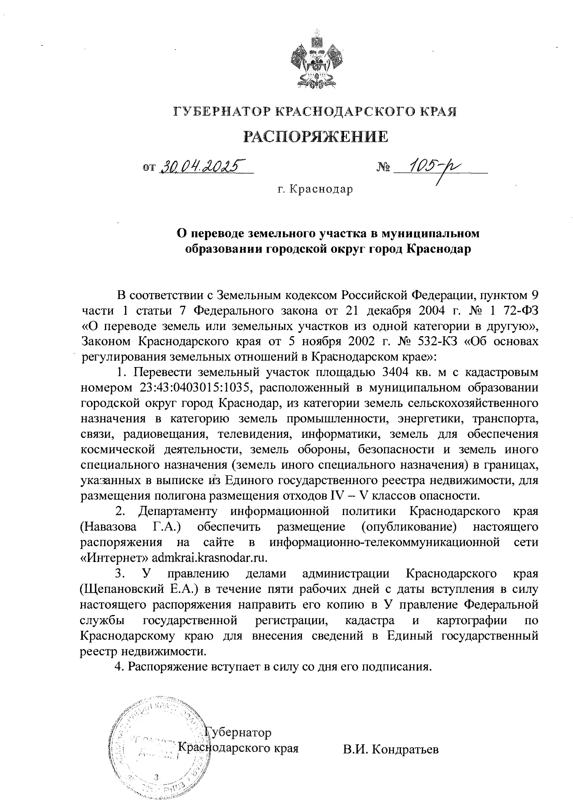

В Краснодаре сельскохозяйственный участок решили перевести в категорию земель промышленности, энергетики и транспорта. К 3 мая стало известно, что там разместят мусорный полигон.
Администрация Краснодарского края опубликовала распоряжение губернатора Вениамина Кондратьева от 30 апреля 2025 года о переводе земельного участка в кубанской столице.
Речь идёт о территории площадью 2834 «квадрата» (0,3 гектара) с кадастровым номером 23:43:0403015:1035, площадью 2834 кв.м., расположенный в, Участок расположен в районе 13 км Ростовского шоссе города Краснодара. Судя по кадастровой карте, он представляет собой многоконтурный участок, состоящий из двух участков, которые находятся в границах СНТ №2 АО «Югтекс».
Согласно распоряжению, эту территорию сельскохозяйственного назначения переводят в категорию земель промышленности, энергетики, транспорта, связи, радиовещания, телевидения, информатики, обеспечения космической деятельности, обороны, безопасности и земель иного спецназначения.
Там собираются разместить полигон для отходов IV - V классов опасности. К ним, например, относятся изделия из бумаги, древесины и стекла, одежда, пластмасса и полиэтилен, пищевые отходы.
